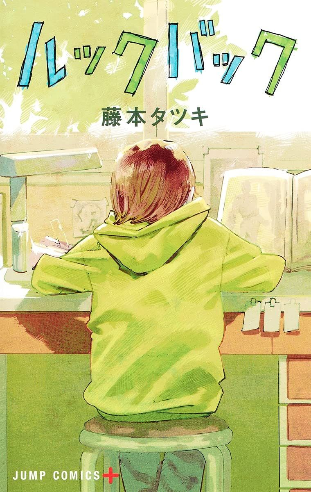

Look Back
Thể loại: Tâm lý, Bi kịch
Mô tả:
Look Back là một one-shot slice of life – tâm lý – nghệ thuật của Tatsuki Fujimoto, xoay quanh tình bạn, sáng tạo và sự mất mát. Câu chuyện khai thác hành trình của hai cô bé yêu vẽ tranh, nơi niềm đam mê nghệ thuật vừa là động lực sống, vừa là sợi dây gắn kết số phận của họ. Tác phẩm mang không khí lặng lẽ, chân thật và để lại dư âm sâu sắc về việc nhìn lại quá khứ để tiếp tục bước đi.
Tóm tắt cốt truyện:
Fujino là một cô bé tự tin vào khả năng vẽ manga của mình và thường xuyên được đăng tranh trên báo tường của trường. Một ngày nọ, cô biết đến Kyomoto – một học sinh ít nói, không đến lớp nhưng có kỹ năng vẽ vượt trội. Từ sự so sánh và mặc cảm ban đầu, Fujino dần tiếp cận Kyomoto. Cả hai bắt đầu cùng nhau vẽ manga, chia sẻ ước mơ và dành trọn tuổi trẻ cho hội họa. Tuy nhiên, một biến cố bất ngờ xảy ra, khiến Fujino phải đối diện với nỗi đau, sự hối tiếc và câu hỏi về ý nghĩa của việc sáng tạo. Look Back là câu chuyện về việc nhìn lại những lựa chọn trong quá khứ, chấp nhận mất mát và tìm cách tiếp tục vẽ, tiếp tục sống dù không còn như xưa.
Bình luận
Vui lòng đăng nhập để bình luận.